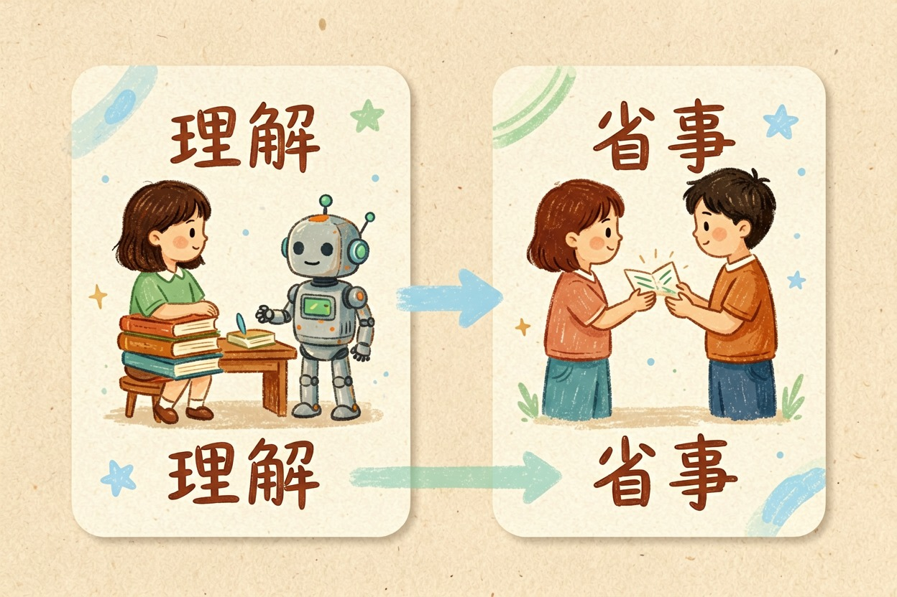
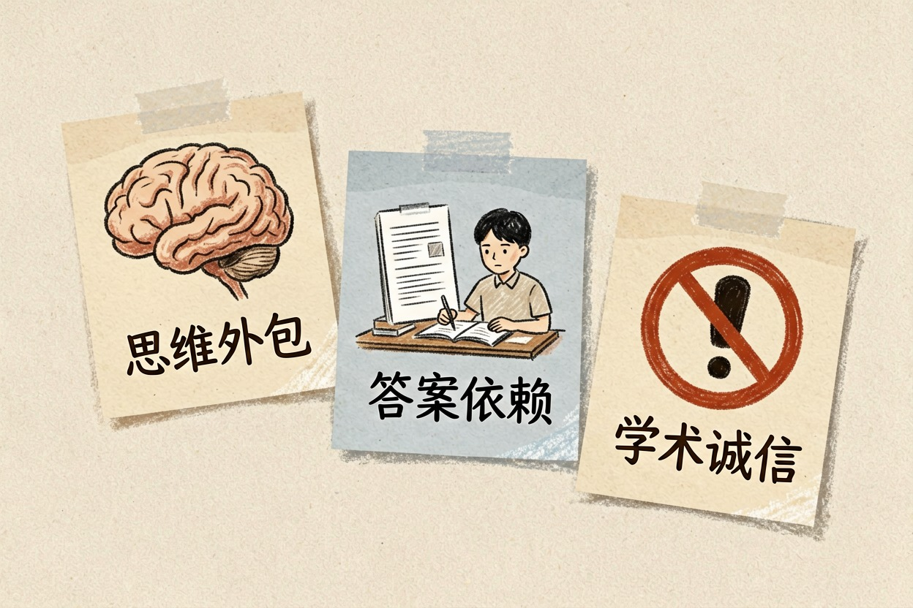
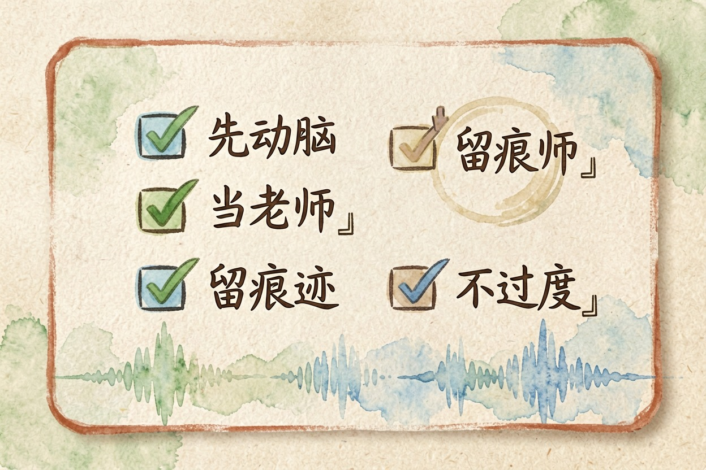
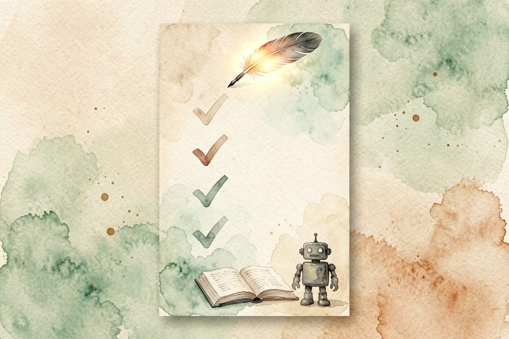

学生该不该用 AI？利弊和边界
学生用 AI 的答案不该一刀切。核心就一句：这条回答是让你更懂，还是替你省事？前者是辅助，后者是代替。
学生用 AI 的利弊，不该用「能」或「不能」一句话回答。关键在用来「理解」还是「代替理解」。判断标准很简单：这条 AI 回答让你更懂，还是更省事？
更懂是辅助学习，更省事是代替思考。全看你怎么用。下面把好处、风险、边界一次讲清，家长和学生都适用。
学生用 AI 的利弊：先说结论，分场景

可以用，但要分场景。查资料、个性化讲解、错题复盘，这些该用。代写作业、考试作弊、直接抄答案，这些别用。
同一个工具，用在学习端是助力，用在偷懒端就是坑。结论不是「AI 好不好」，而是「你怎么用」。讨论这个问题，先把这个场景分清楚。
分清了，很多纠结自然消失。这就是最朴素的答案。
AI 对学习的三个好处
第一，个性化讲解。课堂没听懂的地方，让 AI 换个说法讲到你会为止。第二，查漏补缺。让 AI 根据你的错题生成同类练习，针对性补短板。
第三，效率提升。整理笔记、生成提纲、快速检索，把省下的时间还给思考。比如用 AI 练英语口语，每天 15 分钟就能开口，可看用 AI 练英语口语。
好处是实的，前提是你用它来理解。这三点，就是它的利所在。
AI 对学习的三个风险

第一，思维外包。什么题都问 AI，自己慢慢不会想了。第二，答案依赖。直接抄 AI 的答案，考试时原形毕露。
第三，学术诚信。代写作业、论文，可能违反学校规定。风险也是实的，尤其当 AI 替你思考时。要搞清论文边界，可看AI 写论文怎么用才不算作弊。
好处和风险，其实是一体两面。弊的一边，就是这三个坑。
判断标准：这条回答让你「更懂」还是「更省事」

用之前问自己一句：我是在理解，还是在省事？参考下面这份清单。它把上面的判断，浓缩成四个问题。
学习用 AI 自查清单：
1) 先自己想，再问 AI：我有没有先动脑？
2) 把 AI 当老师，不当答案机：我要的是讲解，还是答案？
3) 重要作业留痕：草稿、过程、修改记录有没有保留？
4) 会不会离开 AI 就不会做？如果是，说明过度依赖。这四条过一遍，用不用、怎么用，心里就有数。判断会越来越熟练。想系统规划学习场景，可看AI 辅助学习怎么做。说到底，边界比工具更重要。
给家长和老师的三句话 + 一个提醒
给家长和老师三句话。第一，别一刀切禁止，禁是禁不住的。第二，教方法比封工具重要，教孩子怎么用 AI 理解。
第三，和学生约定使用边界，什么该用、什么不该用，白纸黑字写清楚。约定之后还要定期复盘，看约定是否被遵守。再补一个提醒：别用 AI 代写作业，别把 AI 当答案机，也别让孩子偷偷用 AI 应付考试。
学生用 AI 的利弊，最后取决于家庭和学校怎么引导。把判断标准教给孩子，比管住工具更长远。具体以学校规定和老师要求为准，相关政策可参考教育部官网{:target="_blank"}和国家网信办官网{:target="_blank"}。工具本身不分好坏，用对方向，它就是学习伙伴。

本文信息核对于 2026-08-06。AI 产品的价格、免费额度与功能变动频繁，实际以各工具官网当前说明为准。